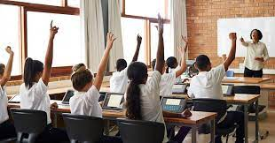

ICSE Board Rules and Affliation

Indian Certificate for Secondary Education or ICSE, as it is popularly known as, is a private, non-governmental
board of school education in India. Established way back in 1958, it was formed by the University of Cambridge
Local Examinations Syndicate, with the assistance of the Inter-State Board for Anglo-Indian education. Though
considered as the second most prominent board of education in our country, most of the people don’t even know
that it is not still a board. ICSE is the certificate offered at the completion of the course. Yet, ICSE board
is the term used to mention this course. The council is mainly responsible for conduction of an all India exam
for class X, which is popularly known as ICSE. Another exam conducted by the council is known as ISC or the
Indian School Certificate.
The ICSE board follows a comprehensive syllabus which has an interactive approach towards education. The board
syllabi covers all the fields in various subjects with equal importance. Although most of our competitive exams
are formed keeping the CBSE board syllabi in mind , but the students of ICSE have an edge when they apply for
foreign universities or attempt exams like TOEFL. ICSE students have a better chance of selection and growth in
streams of management and humanities due to the emphasis on language and practical in the ICSE curriculum. The
curriculum is extremely engaging and challenging for the students and is successful in retaining the students’
interest levels.
The ICSE board follows their own set of rules and regulations regarding the syllabus and scheme of examinations.
Recently, the ICSE even introduced reforms in its examination system, which included e-registration and
centralized marking of scripts at both ICSE and ISC levels. The board has also decided to make its evaluation
more transparent and clear, so that the students get a clear understanding of their evaluation system. The
Council of ICSE has even declared that they would be centralizing the marking of their answer scripts for ICSE
and ISC examinations. Further, rules and regulations of the ICSE have been described as follows:
-
The board mainly conducts three examinations- the ICSE, the ISC and the Certificate of Vocational Education.
- The board has a Committee on Examinations and Subject Committees for formulating and revising the curriculum
and the syllabus of the ICSE board. They are also the ones who handle the criticisms and suggestions given
for the website. The members of the team are well-trained examiners and specialists.
-
The board has very strict rules regarding the attendance of the students. Candidates with less than 75%
attendance, are not allowed to sit for the examination. This is inclusive of absence due to illness and
other special circumstances.
-
The schools affiliated under the ICSE board are provided with their own booklet which contains the
regulations and syllabi of the Board.
- If any candidate(s) is/are found not following the rules and regulations of the board regarding the
examinations, then the candidate or the candidates concerned may be disqualified.
- Under ICSE, a strong emphasis is laid on vital and practical tests and assignments. The schools are bound to
have labs for subjects such as Math, Science, Computers etc. The marks of these tests are aggregated with
the overall scores of the student. ICSE also lays strong emphasis on Lab work in subjects such as Science
and Math.
-
Under ICSE, a strong emphasis is laid on vital and practical tests and assignments. The schools are bound to
have labs for subjects such as Math, Science, Computers etc. The marks of these tests are aggregated with
the overall scores of the student. ICSE also lays strong emphasis on Lab work in subjects such as Science
and Math.
- The ICSE board has made it compulsory for all the schools following ICSE pattern to include environmental
education as one of the subjects. The teaching of this subject helps to raise the mental bar of the students
and make them more aware of their environment.
- Since 2005, ICSE has provided students with the option of choosing one subject from a group of skill-based
subjects for the final term exams. They can choose from a variety of subjects such as art, dance, physical
education, cookery etc. While the examinations, 50% of the assessment is made by an outside examiner.